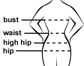
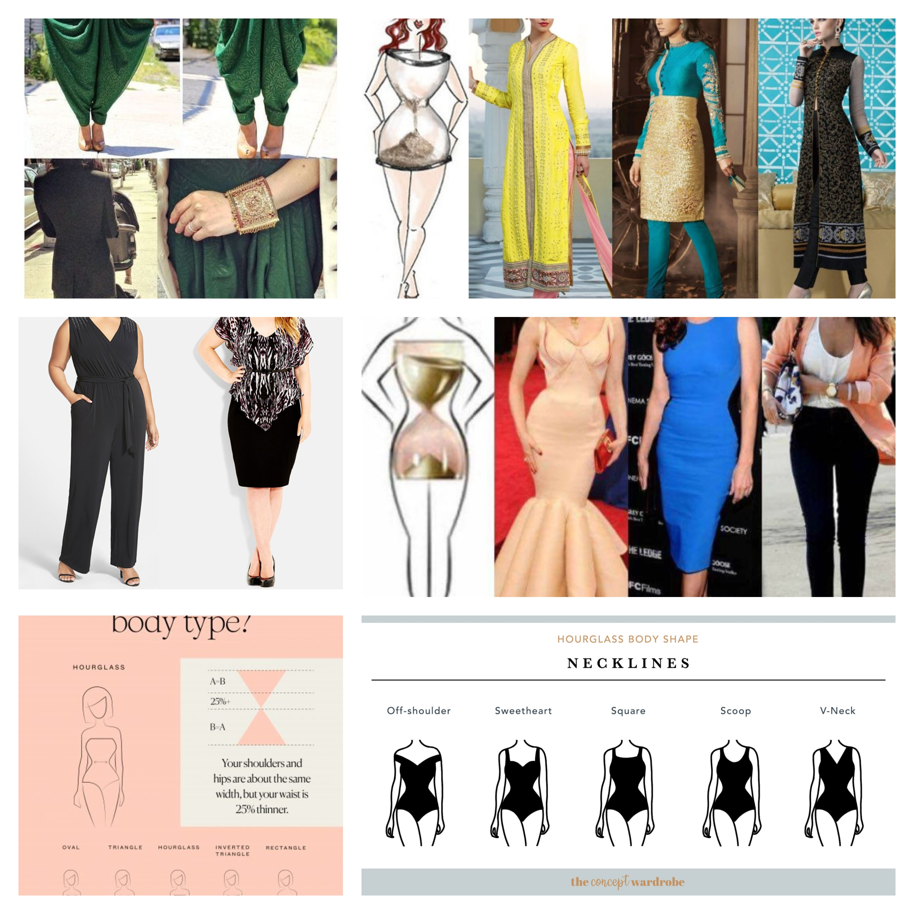
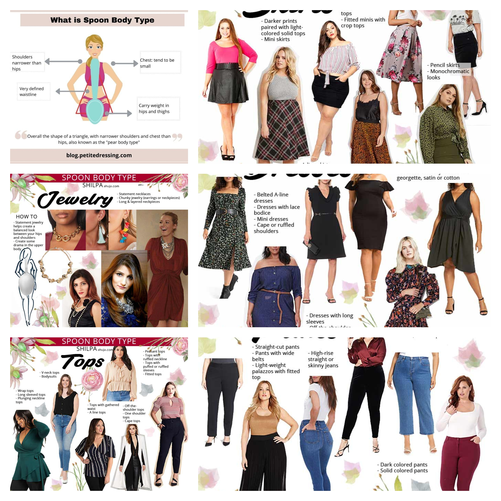
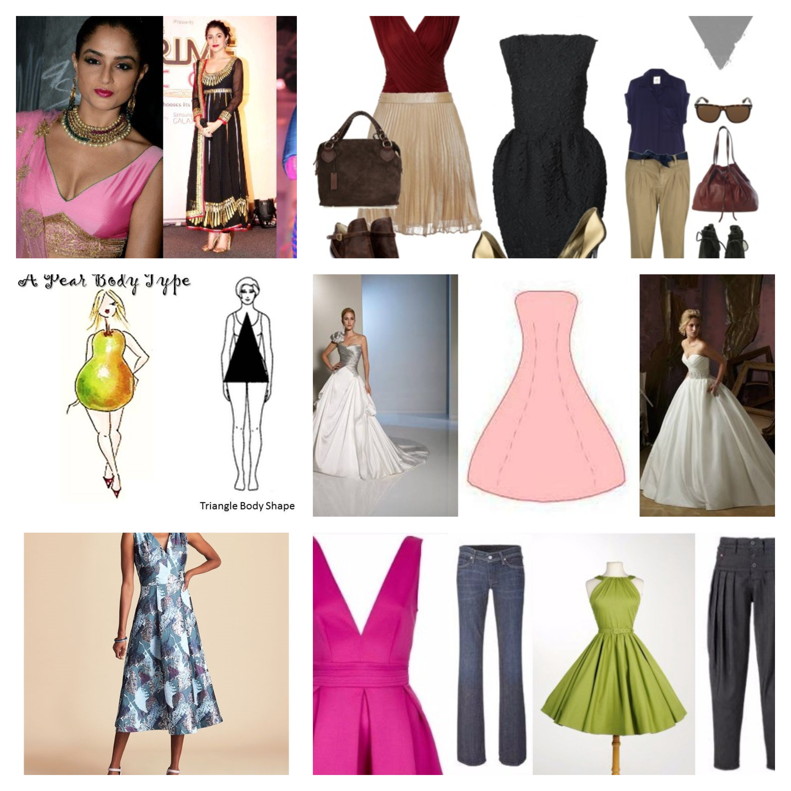
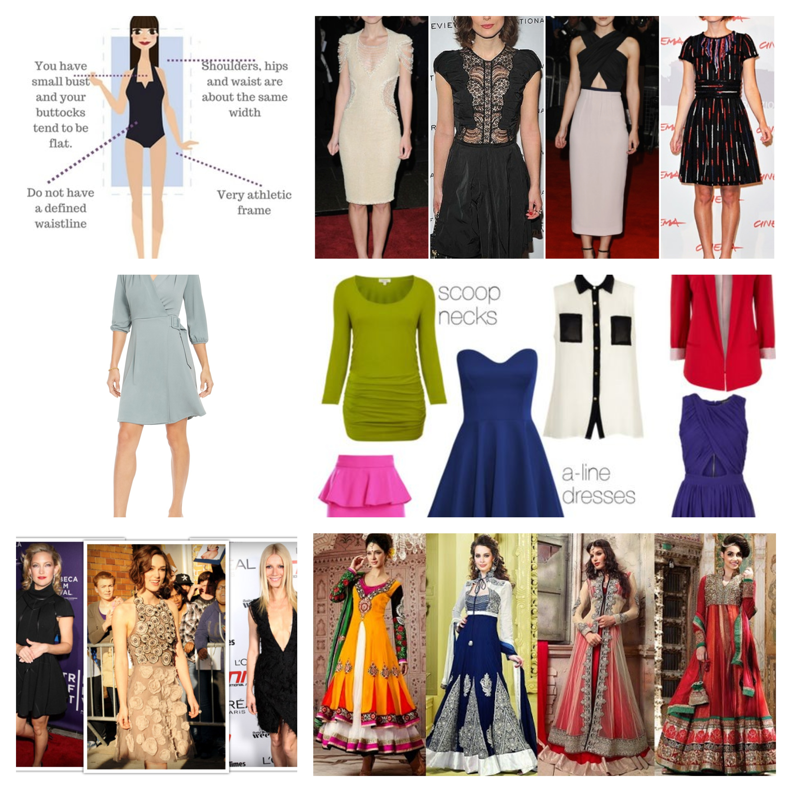
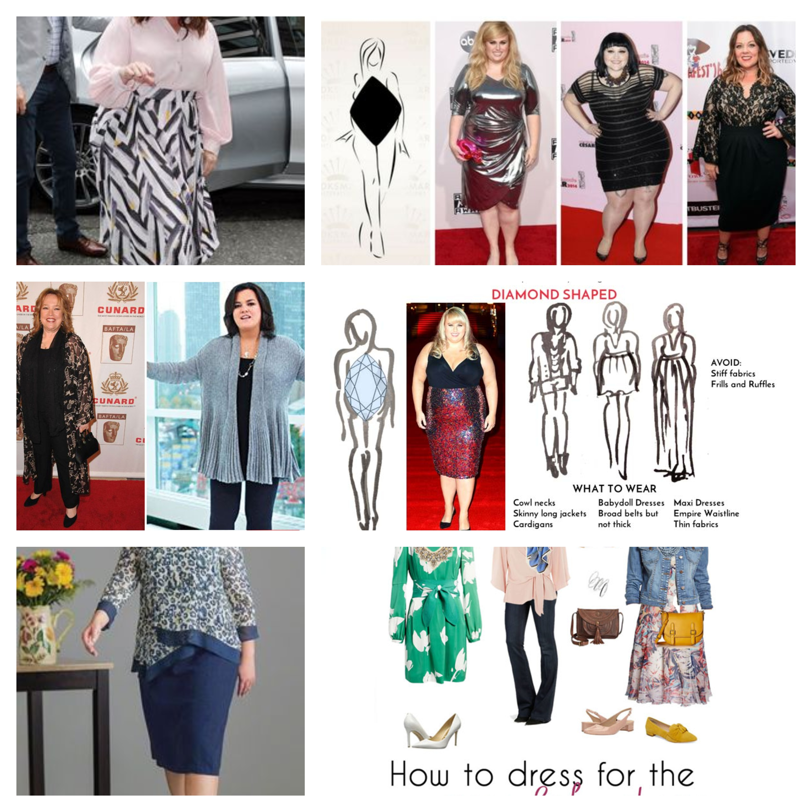
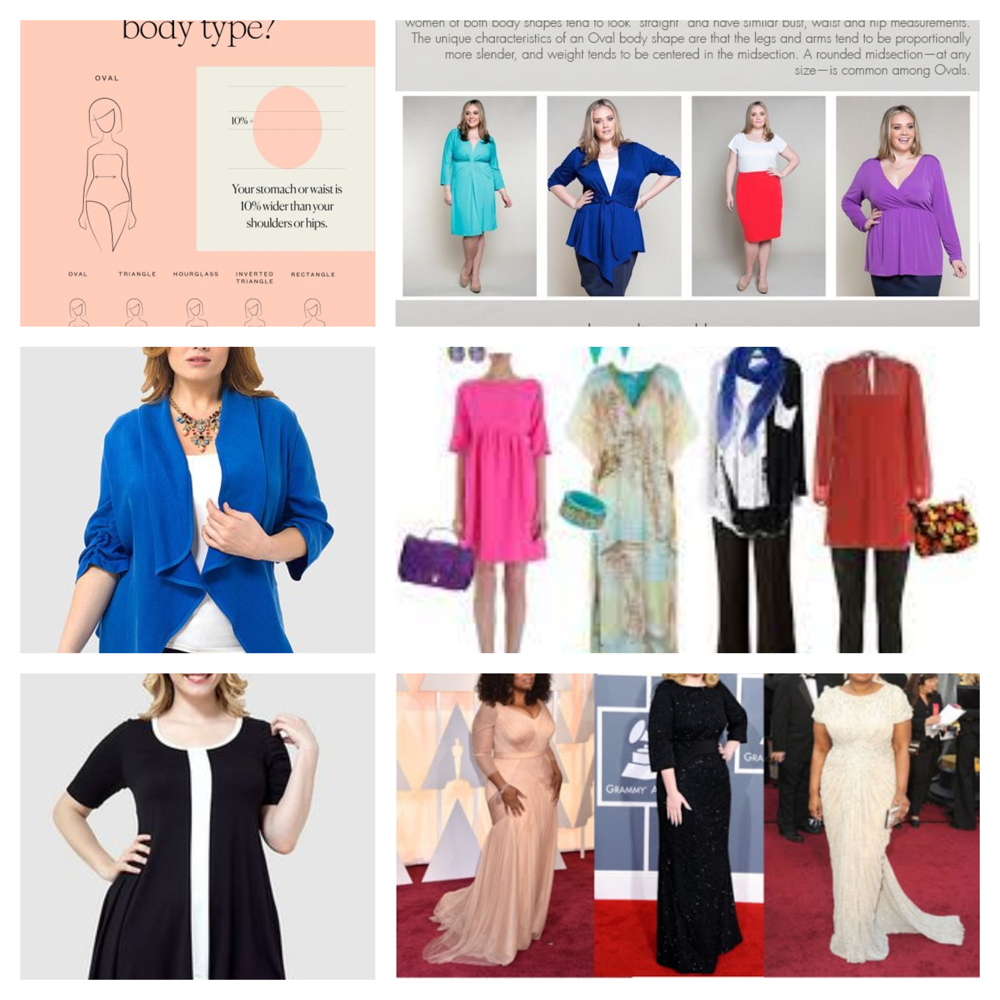
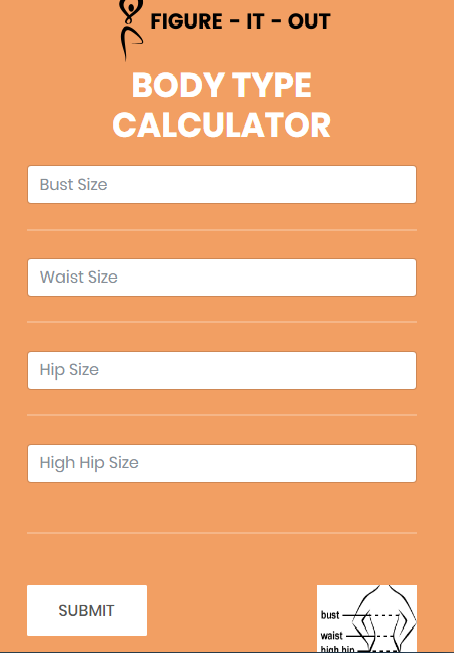
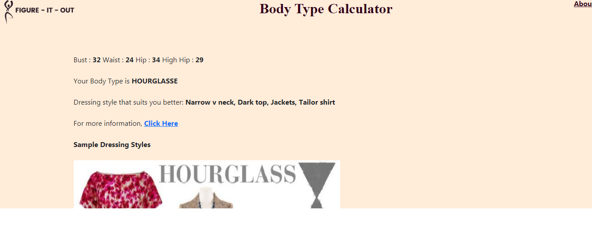
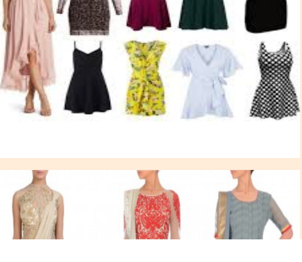

Your body type is incredibly important, especially when it comes to fashion. An outfit that looks great on a lean model will definitely look different on someone with a pear-shaped body. But before you can learn how to dress for your body shape, you first need to know what your body type actually is. Read on for more information about body types, a body shape calculator, and even a body type test.
So, What Is My Body Type? How To Measure Your Body While most people can tell what their body type is just by looking in the mirror, you can get a more accurate reading by actually measuring your body. Here’s how:
Using a measuring tape, get the measurement of your bust. Wear a proper-fitting bra and measure around the fullest part of your chest. Ask a friend to help you with this one. Get the measurement of your shoulders. The tape should wrap around you at the highest point without it slipping off. Then, get the measurement of your waist. This is the area right above your belly button and is usually the narrowest part of your torso (although not always). Finally, get your hips measurement. Stand with your feet shoulder-width apart. Find the widest point of your hip area, which should be low enough that the tape passes around the top of your butt as well. |
 |
The Different Body Types
HOURGLASS
Top
Women with an hourglass body have their bust and hips at roughly the same measurement, while also having a narrower, defined waist. This is one of the curvy female body shapes.

SPOON
Top
Spoon-shaped bodies are similar to a pear-shaped figure, with curvy hips, a larger butt, and a slimmer upper body, proportionally. ... This shape is different from the hourglass shape in that the bust is at least 2 inches smaller than the hips, and the waist is defined.

TRIANGLE
Top
Triangle Body Shape, People with this body shape are heavy/wide on the hips compared to the upper body the shoulders. They do not fall in the same line with the hips. People with this body shape are also called as “Pear” shaped. Below are a few amazing tips on how you can make your Triangle/Pear body look ideal.
INVERTED TRIANGLE
Top
Women with an inverted triangle body have broader shoulders than the hips, with little to no waist definition. Their body follows the shape of a “V”, and shoulders may be straight, squared, or athletic-looking.

RECTANGLE
Top
The rectangle body shape is characterised by equal bust, waist and hip measurements. Rectangles tend to be tall and lean. They are not particularly curvy, the waist is not well-defined, and the bottom is rather flat.

DIAMOND
Top
Diamond. If you have broader hips than shoulders, a narrow bust, and a fuller waistline, you have what's called a diamond body shape. With this type, you may carry a little more weight in your upper legs. You may also have slender arms. Flowy off-the-shoulder or boat-neck tops are usually recommended for this body type

OVAL
Top
What is an oval body type? Women with this type of body usually are larger in the chest and abdomen areas. The shoulders and hips are proportional, while the waist is not very defined and tends to be wider than the hips. A variant of this body type would be the “diamond” body shape, which is fuller around the abdomen

HOME PAGE
Home page allows the user to enter body measurements and submit it for results.

SUBMIT PAGE
Top
Submit page displays the following results based on sizes entered:
1. Body Type
2. Brief description about outfits
3. URL for more information
4. Dressing style images


